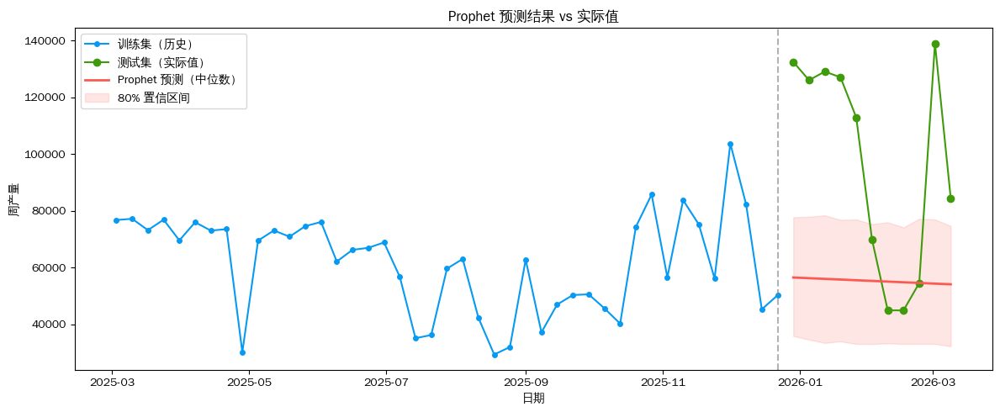

Prophet 时序预测——设备产量
使用 Facebook Prophet 对周度设备产量进行预测。
数据：data/production_weekly.csv（55行，周度，2025-03-03 ~ 2026-03-09）
训练集：前 80%（44行）；测试集：后 20%（11行）；预测步长：11周
import pandas as pd
import matplotlib.pyplot as plt
import numpy as np
import warnings
warnings.filterwarnings('ignore')
from prophet import Prophet
plt.rcParams['font.sans-serif'] = ['WenQuanYi Zen Hei', 'WenQuanYi Micro Hei']
plt.rcParams['axes.unicode_minus'] = False
raw = pd.read_csv('data/production_weekly.csv')
raw['日期'] = pd.to_datetime(raw['日期'])
df = raw.rename(columns={'日期': 'ds', '产量': 'y'})[['ds', 'y']]
print(f'数据行数: {len(df)}，时间范围: {df["ds"].min().date()} ~ {df["ds"].max().date()}')
df.tail(10)数据行数: 54，时间范围: 2025-03-03 ~ 2026-03-09| ds | y | |
|---|---|---|
| 44 | 2026-01-05 | 126072 |
| 45 | 2026-01-12 | 129120 |
| 46 | 2026-01-19 | 127088 |
| 47 | 2026-01-26 | 112912 |
| 48 | 2026-02-02 | 69888 |
| 49 | 2026-02-09 | 44912 |
| 50 | 2026-02-16 | 44912 |
| 51 | 2026-02-23 | 54520 |
| 52 | 2026-03-02 | 139064 |
| 53 | 2026-03-09 | 84480 |
# 按 80/20 划分训练集和测试集
TRAIN_RATIO = 0.8
split_idx = int(len(df) * TRAIN_RATIO)
train_df = df.iloc[:split_idx].copy()
test_df = df.iloc[split_idx:].copy()
PRED_LEN = len(test_df)
print(f'训练集: {len(train_df)} 行 ({train_df["ds"].min().date()} ~ {train_df["ds"].max().date()})')
print(f'测试集: {len(test_df)} 行 ({test_df["ds"].min().date()} ~ {test_df["ds"].max().date()})')
print(f'预测步长: {PRED_LEN} 周')
fig, ax = plt.subplots(figsize=(12, 4))
ax.plot(train_df['ds'], train_df['y'], marker='o', markersize=4, color='xkcd:azure', label='训练集')
ax.plot(test_df['ds'], test_df['y'], marker='o', markersize=4, color='xkcd:grass green', label='测试集')
ax.axvline(x=train_df['ds'].iloc[-1], color='gray', linestyle='--', alpha=0.7, label='分割点')
ax.set_title('历史数据趋势（训练/测试划分）')
ax.set_xlabel('日期')
ax.set_ylabel('周产量')
ax.legend()
plt.tight_layout()
plt.show()训练集: 43 行 (2025-03-03 ~ 2025-12-22)
测试集: 11 行 (2025-12-29 ~ 2026-03-09)
预测步长: 11 周
# 周度产量数据：三类内置季节性全部关闭。
# - weekly_seasonality=False：数据本身即周度，每行代表整周，
# 不存在"周内各天"规律，强开会导致 Fourier 系数数值爆炸。
# - daily_seasonality=False：同理，无日内规律。
# - yearly_seasonality=False：训练集仅覆盖 2025-03 ~ 2025-12，
# 不足一整年。Prophet 年度季节性为 365.25 天周期 Fourier 级数，
# 在训练集看不到 1-2 月的情况下，强开会对这两月做严重错误外推
# （预测 1 月产量高达 160 万，实际仅 12 万，误差 12 倍以上）。
# 如果将来积累到 ≥2 年完整数据，可以重新开启并加入春节假期特征。
m = Prophet(
yearly_seasonality=False,
weekly_seasonality=False,
daily_seasonality=False,
seasonality_mode='additive',
)
m.fit(train_df)
print('模型训练完成')10:22:12 - cmdstanpy - INFO - Chain [1] start processing
10:22:12 - cmdstanpy - INFO - Chain [1] done processing
模型训练完成# 向未来延伸 PRED_LEN 周
# 注意：freq='W' 默认锚定周日（W-SUN），若训练集末尾是周一，
# 则预测日期会整体偏移 1 天，导致与测试集对比时日期错位。
# 改用 freq='7D' 以"固定7天步长"延续训练集的星期几对齐。
future = m.make_future_dataframe(periods=PRED_LEN, freq='7D')
forecast = m.predict(future)
forecast_test = forecast.tail(PRED_LEN)[['ds', 'yhat', 'yhat_lower', 'yhat_upper']].reset_index(drop=True)
print(f'预测期: {forecast_test["ds"].iloc[0].date()} ~ {forecast_test["ds"].iloc[-1].date()}')
forecast_test预测期: 2025-12-29 ~ 2026-03-09| ds | yhat | yhat_lower | yhat_upper | |
|---|---|---|---|---|
| 0 | 2025-12-29 | 56495.493968 | 35853.893514 | 77703.057082 |
| 1 | 2026-01-05 | 56255.758798 | 34595.280322 | 77923.354258 |
| 2 | 2026-01-12 | 56016.023627 | 33425.543611 | 78419.342353 |
| 3 | 2026-01-19 | 55776.288457 | 33994.797112 | 76800.527707 |
| 4 | 2026-01-26 | 55536.553287 | 33069.855935 | 76958.407792 |
| 5 | 2026-02-02 | 55296.818116 | 33046.573039 | 75296.512524 |
| 6 | 2026-02-09 | 55057.082946 | 33280.903132 | 75953.836156 |
| 7 | 2026-02-16 | 54817.347776 | 33069.019369 | 74170.816826 |
| 8 | 2026-02-23 | 54577.612606 | 33116.665050 | 77208.859021 |
| 9 | 2026-03-02 | 54337.877435 | 33073.761370 | 76937.612942 |
| 10 | 2026-03-09 | 54098.142265 | 32256.822181 | 74670.064032 |
# 绘制预测结果 vs 实际值
fig, ax = plt.subplots(figsize=(12, 5))
ax.plot(train_df['ds'], train_df['y'],
color='xkcd:azure', marker='o', markersize=4, label='训练集（历史）')
ax.plot(test_df['ds'], test_df['y'],
color='xkcd:grass green', marker='o', markersize=6, label='测试集（实际值）')
ax.plot(forecast_test['ds'], forecast_test['yhat'],
color='xkcd:coral', linewidth=2, label='Prophet 预测（中位数）')
ax.fill_between(forecast_test['ds'],
forecast_test['yhat_lower'], forecast_test['yhat_upper'],
color='xkcd:coral', alpha=0.15, label='80% 置信区间')
ax.axvline(x=train_df['ds'].iloc[-1], color='gray', linestyle='--', alpha=0.6)
ax.set_title('Prophet 预测结果 vs 实际值')
ax.set_xlabel('日期')
ax.set_ylabel('周产量')
ax.legend()
plt.tight_layout()
plt.show()
# 误差指标：MAE、RMSE、MAPE
y_true = test_df['y'].values
y_pred = forecast_test['yhat'].values
mae = np.mean(np.abs(y_true - y_pred))
rmse = np.sqrt(np.mean((y_true - y_pred) ** 2))
mape = np.mean(np.abs((y_true - y_pred) / y_true)) * 100
print('─' * 35)
print(f' MAE (平均绝对误差): {mae:.1f}')
print(f' RMSE (均方根误差): {rmse:.1f}')
print(f' MAPE (平均绝对百分误差): {mape:.2f}%')
print('─' * 35)───────────────────────────────────
MAE (平均绝对误差): 45222.5
RMSE (均方根误差): 54682.8
MAPE (平均绝对百分误差): 39.89%
───────────────────────────────────